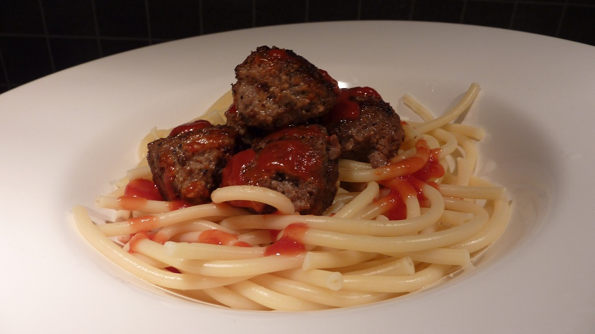

Spaghetti with meatballs

Description
Mildly awesome recipe for spaghetti and meatballs with ketchup
Ingredients
- Spaghetti
- Meatballs
- ketchup
Steps
- Bring a large pot of lightly salted water to a boil.
Cook spaghetti in the boiling water, stirring occasionally,
until tender yet firm to the bite, about 10 to 12 minutes;
rinse quickly under cold water and drain.
- Cook meatballs in a pan with some butter at medium to high heat
- Serve with ketchup and a cold glass of milk